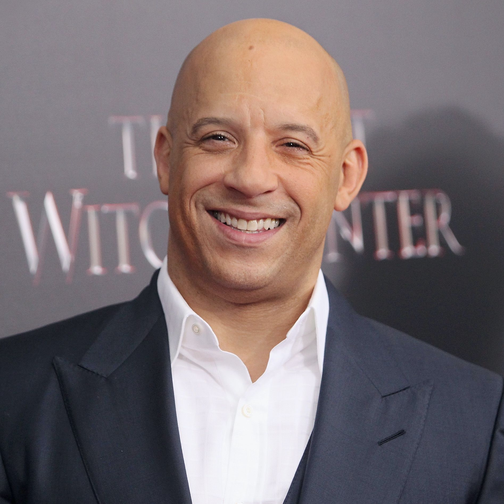
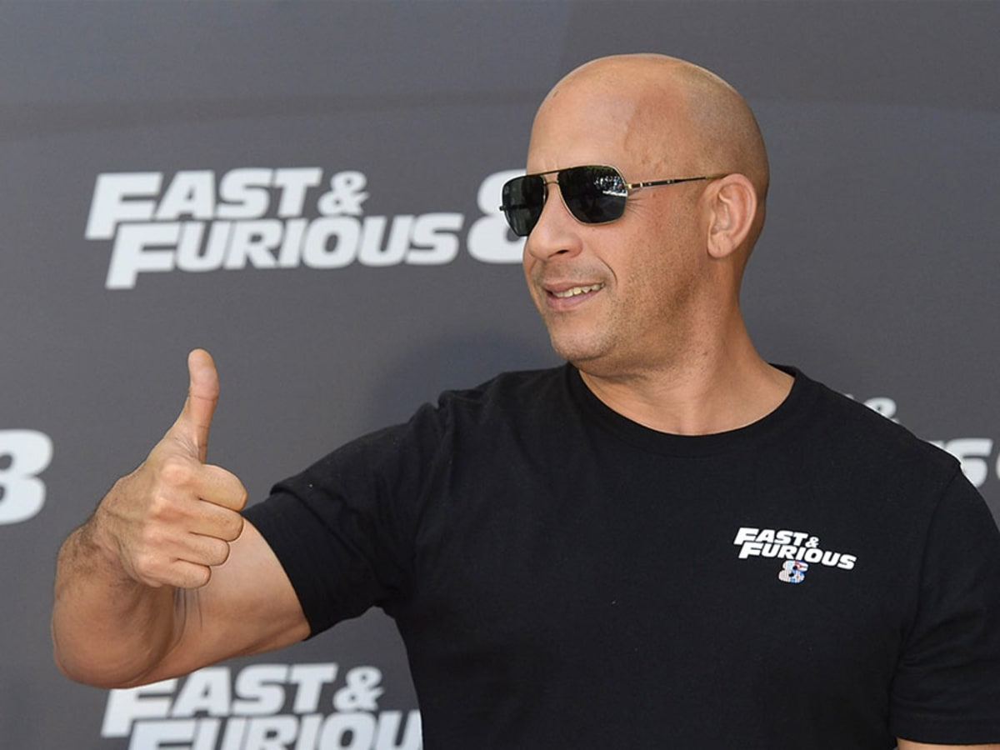
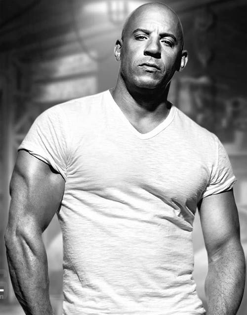
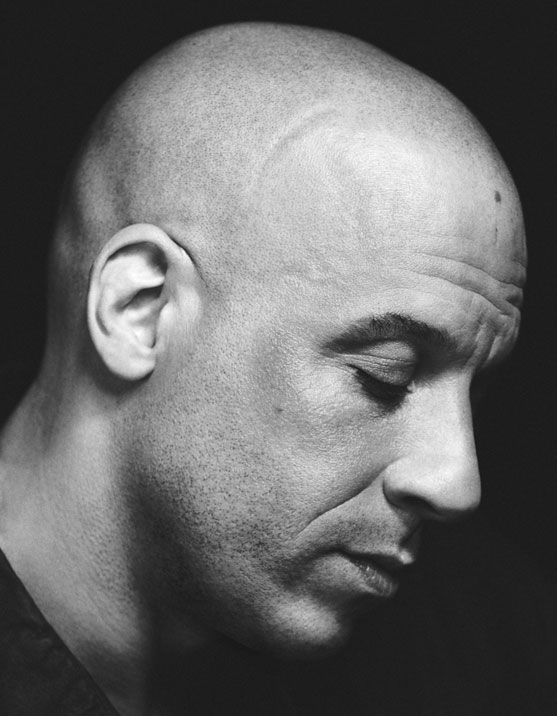
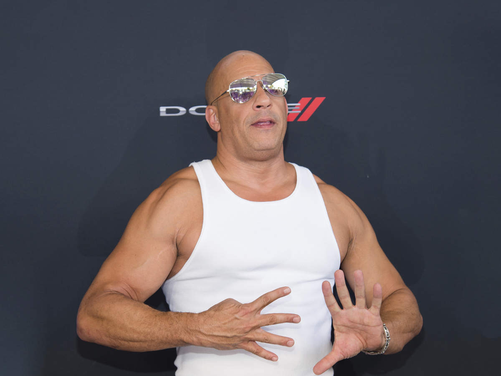
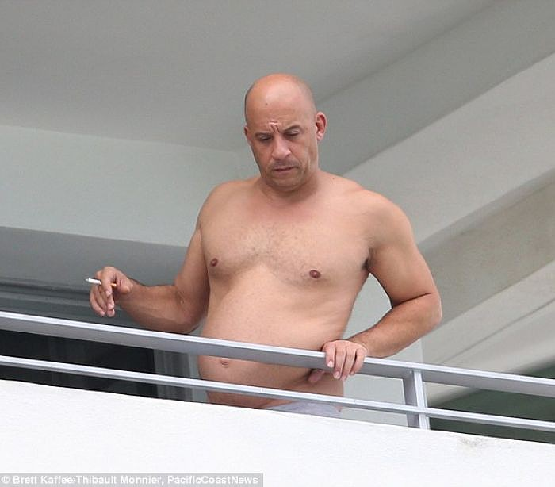
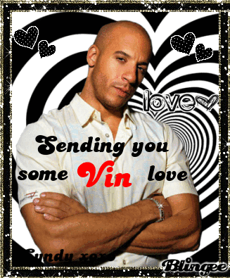

Welcome to my image gallery honoring Luigi Petrol's more famous brother; Vincent Diesel
The Vin and the Diesel
2 Vin 2 Diesel

The Vin and the Diesel: Tokyo Drift
Vin & Diesel

Vin Five

Vin & Diesel 6
Diesel 7

The Fate of the Diesel
V9

Vin X

Vin Conclusion
